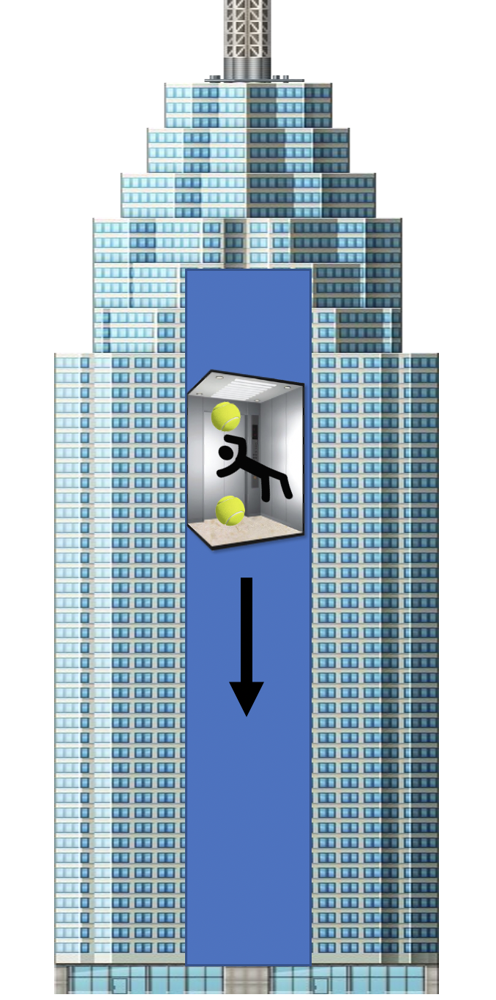

Forrige side🙂 🙁InertialsystemerPADLET

Men hva hvis vi har to baller En øverst i heisen og en nederst. Vil disse også forbli i ro i forhold til heissystemet??? JA! Vi er jo i et inertialsystemNEI! De vil begynne å falle nedover
NEI! De vil begynne å falle oppoverNEI! De vil begynne å falle mot hverandre
NEI! De vil begynne å gå fra hverandreNEI! De vil gå i tilfeldige retninger